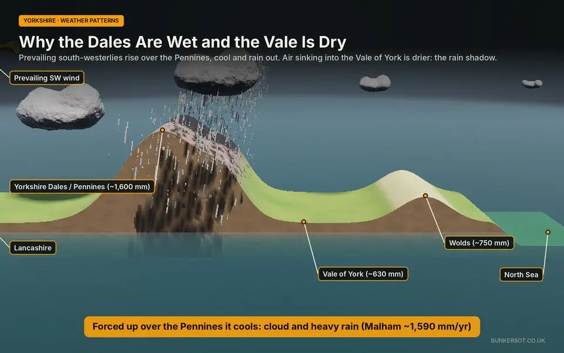

Yorkshire
England's biggest county: three national parks, the wettest hills in the east of England, and one of the fastest-eroding coasts in Europe.
West is wet, east is dry. The Dales get around 1,600 mm of rain a year. The Vale of York, 50 km east, gets about 630 mm. Plan water, shelter and clothing around that split. The high roads close first: the A66 (Stainmore), the M62 summit, the A628 Woodhead, the A57 Snake Pass and the Dales passes go first in snow. Rivers flood fast: the Calder, Aire, Ouse, Don and Derwent have all flooded towns since 2000. Rescue: call 999 → Police → Mountain Rescue (or Cave Rescue) inland, or 999 → Coastguard on the coast. Yorkshire has volunteer teams across every upland. Wild camping needs the landowner's permission everywhere in Yorkshire. Open access land is for walking, not camping or fires.
Tap or click anywhere for the grid reference, elevation, live forecast, zone profile and nearest help. The live layers need a signal; everything below works offline.
1. The Lie of the Land
From west to east, Yorkshire is a staircase down to the sea:
- The Pennines form the spine.
- In the north: the Yorkshire Dales, with limestone scars, pavements, caves and the Three Peaks (Whernside 736 m is the county's highest point).
- In the middle: Nidderdale and the gritstone moors.
- In the south: the South Pennines and Dark Peak above Calderdale, Huddersfield and Sheffield, where peat bog and steep, densely populated mill valleys sit side by side.
- The Vale of York and Vale of Mowbray form a broad, flat, fertile corridor along the A1 and the East Coast Main Line. It is the county's breadbasket and its main north–south route.
- The North York Moors are the largest continuous heather moorland in England (Urra Moor 454 m). Deep green dales cut into them, and they end in sea cliffs.
- The Howardian Hills and Vale of Pickering are sheltered farmland. The Vale of Pickering was a lake after the last Ice Age, and its low centre still floods.
- The Yorkshire Wolds are rolling chalk (Bishop Wilton Wold, 246 m). Valleys are dry, surface water is scarce, and the chalk aquifer below is huge.
- Holderness is low boulder clay ending at a soft coast that loses around 1.5–2 m a year on average (up to 4.5 m on the worst stretches): one of Europe's fastest-eroding coastlines, with Spurn Point at its tip.
- The Humberhead Levels are drained marsh and peat around Goole and Thorne, much of it barely above sea level and protected by banks and pumps.

2. Weather Patterns
The prevailing wind is south-westerly. It carries Atlantic air that rises over the Pennines, cools and drops its moisture on the western hills. East of the watershed the air sinks and dries.
| Pattern | When | What it means for you |
|---|---|---|
| Atlantic fronts | Any time; most often autumn and winter | Days of rain on the Dales and South Pennines. Rivers rise within hours on steep gritstone and peat catchments. Hill fog. |
| Pennine rain shadow | Westerly weather | The Vale of York, Wolds and coast stay much drier. Best area for growing food and drying gear. |
| Easterlies / "Beast from the East" | Mostly late winter and early spring | Bitter North Sea air. Snow hits the North York Moors, Wolds and the east coast hardest, along with the Pennines. Drifting closes high roads. |
| Sea fret (haar) | Spring and early summer, onshore winds | Cold, wet fog rolling in from the North Sea. The coast can be 10 °C colder than inland. Visibility can drop to a few metres on the cliffs. |
| Vale fog and frost | Clear, still nights, autumn to spring | Cold air drains into the Vale of York and the Vale of Pickering. Frost hollows make valleys colder than nearby slopes, so camp on a gentle rise, not in the bottom. |
| Summer convection | Hot spells | Thunderstorms over the Pennines. Flash floods in limestone dales and caves; lightning on open moor. |
| Upland winter | Nov–Mar, sometimes Oct–Apr | The Dales tops get 30–60 snow days a year and severe wind chill. Malham Tarn's January average minimum is just 0.2 °C. |
The trans-Pennine roads in snow:
- A66 Stainmore: the first to close; strong crosswinds.
- M62 at Windy Hill: England's highest motorway, about 372 m.
- A628 Woodhead and A57 Snake Pass: frequently shut.
- B6270 and Buttertubs (Dales passes): treat them as impassable in snow.
- Tan Hill (528 m), Britain's highest pub: has had guests snowed in for days.
Watch the western sky from the Vale: a thickening, lowering veil over the Pennines usually means rain within hours. On the coast, a grey wall on the eastern horizon in spring is a sea fret coming in. Get off the cliff paths before it reaches you.
3. Climate at a Glance
Met Office 1991–2020 averages. Station markers on the map show the same figures.
| Station | Elev. | Rain (mm/yr) | Rain days (≥1 mm) | Jan avg min | Jul avg max | Sun (h/yr) |
|---|---|---|---|---|---|---|
| Malham Tarn (Dales) | 391 m | 1,587 | 185 | 0.2 °C | 17.4 °C | 1,154 |
| Bradford | 134 m | 890 | 142 | 1.8 °C | 20.4 °C | 1,319 |
| Sheffield | 131 m | 832 | 133 | 2.2 °C | 21.4 °C | 1,485 |
| Scarborough | 110 m | 706 | 127 | 2.0 °C | 19.2 °C | 1,579 |
| Hull | – | 693 | 125 | 2.1 °C | 22.0 °C | 1,559 |
| Leeming (Vale of Mowbray) | 32 m | 654 | 121 | 1.1 °C | 21.0 °C | 1,487 |
| Whitby | 41 m | 644 | – | 2.2 °C | 19.9 °C | 1,622 |
| Linton-on-Ouse (York) | – | 634 | – | 1.3 °C | 21.4 °C | 1,342 |
Takeaway: Malham gets two and a half times the rain of York, on 60 more wet days, with three to four degrees less warmth in summer. Kit, shelter and food plans that work in York will fail on the tops.
4. Terrain Zones in Detail
The map colours each zone. Click a zone for its full profile. In summary:
| Zone | Height | Rain | Snow days | Survival character |
|---|---|---|---|---|
| Yorkshire Dales | 150–736 m | 1,200–2,000 mm | 30–60 | Abundant water, stone barns and walls for wind shelter. Caves and potholes are deadly in flood. Sheep country, and very exposed tops. |
| Nidderdale & Washburn | 100–700 m | 900–1,400 mm | 15–35 | Reservoirs, grouse moor and forestry. Quieter than the Dales. |
| South Pennines & Dark Peak | 150–582 m | 1,000–1,500 mm | 20–40 | Peat bog, groughs and reservoirs right above big towns. Moorland wildfire risk in dry springs (Saddleworth 2018). Steep valleys flood. |
| North York Moors | 0–454 m | 750–1,000 mm | 20–30 | Vast heather with little shelter on top. Wooded dales and becks below. Adders. Ends in cliffs and coves. |
| Howardian Hills | 30–200 m | 650–750 mm | 8–15 | Wooded estates and good shelter. Rich farmland. |
| Vale of Pickering | 15–60 m | 650–750 mm | 8–15 | Flat, fertile, carr land. The Derwent and Rye flood the centre. |
| Vale of York & Mowbray | 10–80 m | 600–700 mm | 5–12 | Driest, most fertile and most populated corridor. Fog and frost hollows. Ouse flooding. |
| Yorkshire Wolds | 20–246 m | 700–850 mm | 10–18 | Chalk with little surface water (springs at the foot of the scarp). Big open arable fields, hares, partridge. |
| Holderness & Spurn | 0–30 m | 600–700 mm | 3–8 | Low, drained, exposed. The coast is eroding. Spurn is tidal and remote. |
| Humberhead Levels | 0–10 m | 550–650 mm | 3–8 | Below or near sea level, drains and pumps. Flood-dependent on infrastructure. Peat moors (Thorne, Hatfield). |
| West & South Yorkshire towns | 10–300 m | 650–900 mm | 8–20 | Dense population, canals and rivers, old industrial land. Most resources, most competition. |
| Teesside & Cleveland Plain | 0–100 m | 600–650 mm | 5–10 | Industry, estuary and port. The northern gateway to the Moors. |
| Mixed farmland & valley fringes | 10–300 m | 650–1,000 mm | 5–20 | Everything between the named zones: lowland farms, villages, woods. |
5. Wildlife & Game
What's where. All legal seasons and methods are on Hunting & Trapping.
| Species | Where in Yorkshire | Notes |
|---|---|---|
| Rabbit | Everywhere: Wolds, Dales field edges, Vale hedgerows, dunes | The most reliable small game in Yorkshire. Ferreting and purse-netting are legal with permission. |
| Brown hare | Wolds and Vale arable, Holderness | No legal shooting close season in England yet (a Feb–Sep close-season bill is before Parliament); sale is banned Mar–Jul. Follow the BASC code: no shooting 1 Mar–31 Jul. Populations are down sharply. |
| Roe deer | Woodland edges across the county, NYM forests (Dalby, Cropton), Howardian Hills | Firearms licence and approved calibre required. |
| Red and fallow deer | Locally, on estates and parks (e.g. Studley Royal, Bolton Abbey area) and escaped populations | Not wild-common. Many are park deer and private property. |
| Red grouse | NYM, Dales, Nidderdale and South Pennine heather moors | 12 Aug – 10 Dec. Intensively managed private shooting. |
| Pheasant & partridge | Lowland estates, Wolds, Vale | Pheasant 1 Oct – 1 Feb; partridge 1 Sep – 1 Feb. |
| Woodpigeon | Arable Vale, Wolds, Holderness | Shot under general licence for crop protection (follow its conditions). |
| Wildfowl | Lower Derwent Valley, Humber, Hornsea Mere, the Levels | Many sites are SSSI or reserves, where shooting is banned. Foreshore and inland seasons differ. |
| Red squirrel 🛡️ | Snaizeholme near Hawes, upper Wensleydale and Garsdale | Fully protected. Do not disturb. |
| Otter, water vole, great crested newt 🛡️ | Rivers and wetlands | Protected. Avoid trapping near their habitat. |
| Grey seal 🛡️ | Spurn, Flamborough, Ravenscar, Saltwick | Protected. Pups Nov–Dec. Keep well back. |
| Adder 🛡️ | NYM heather, Wolds banks, Dales scrub | Venomous but protected. Bites are rare; get to A&E. Basks in spring sun. |
6. Fishing
You need an EA rod licence plus the owner's permission. Coarse close season is 15 Mar – 15 Jun on rivers. See Fishing.
| Water | Species | Notes |
|---|---|---|
| Upper Wharfe, Ure, Swale, Nidd | Brown trout, grayling | Mostly club or estate water. Grayling are fished into winter. |
| Middle Ouse, Swale, Ure, Wharfe, Derwent | Barbel, chub, dace, roach, pike | Some of the best barbel rivers in the north. Cheap day tickets in many towns. |
| Esk (NYM) | Sea trout, salmon | The only significant salmon river in Yorkshire. Strictly regulated, mostly catch-and-release. |
| Reservoirs (Grimwith, Thruscross, Scaling Dam, Langsett area) | Trout and coarse | Check each water. Some have no fishing at all. |
| Canals (Leeds–Liverpool, Aire & Calder) | Roach, perch, bream, pike | Easy access in the towns. Canal & River Trust permits. |
| Coast (Whitby, Scarborough, Filey Brigg, Flamborough, Hornsea) | Cod (winter), whiting, mackerel (summer), bass, flatfish | No licence needed from the shore. Bass rules: 42 cm minimum, catch-and-release only 1 Feb–31 Mar. Tide traps at Filey Brigg and below the cliffs. |
7. Foraging Calendar
The map's season slider shows these points by month. Never eat anything you can't identify with certainty. See the forage notes in Hunting & Trapping.
| Month | What's ready | Where |
|---|---|---|
| Mar–May | Wild garlic (ramsons), nettle tops, hawthorn leaves | Damp Dales and Moors woods (Hackfall, Strid Wood, Farndale) |
| Apr–Jun | Sea beet, scurvy grass, alexanders | Coastal cliffs and verges |
| Jul–Aug | Bilberries | Heather moor edges: NYM, Dales, South Pennines |
| Jul–Sep | Raspberries, wild strawberry, elderflower → elderberry | Hedges, woodland clearings, railway paths |
| Aug–Sep | Blackberries, crab apples, rowan (cook it) | Everywhere: hedges, waste ground |
| Sep–Nov | Sloes, hazelnuts, rosehips, mushrooms (expert only) | Wolds hedges, Howardian woods, NYM dales |
| All year | Hawthorn, chickweed, dandelion, cleavers | Lowland field edges |
the Yorkshire coast and Humber have classified harvesting zones. Shellfish from outfalls, harbours or closed beds can kill. Avoid shellfish entirely unless you know the current classification.
8. Water
- Dales, Pennines and NYM: water is everywhere (becks, springs, reservoirs), but treat all of it. Sheep graze every catchment.
- Old lead-mining areas such as Swaledale, Arkengarthdale, Nidderdale and Greenhow can have metal-contaminated water. Prefer springs well away from spoil heaps.
- Peat water is brown but usually safe once treated; carbon filters help with taste.
- Wolds: surface water is scarce, with dry valleys and few streams. Water comes from springs at the scarp foot, village ponds and the chalk aquifer through wells and boreholes. Plan to carry water.
- Vale, Holderness, Levels: drains and rivers run through farmland. Expect agricultural run-off, sewage overflows and blue-green algae in summer. Rainwater collection is the safer option.
- Towns: canals and rivers are heavily contaminated. Collect from roofs; filter, then disinfect.
The map's Water sources layer marks reliable springs and reservoirs. Clicking anywhere shows the nearest one. Full treatment methods are in Water.
9. Shelter, Access & the Law
- Open access land (CRoW): you have a right to walk on most mapped moorland in the Dales, NYM and Pennines. You have no right to camp, light fires or take game there.
- Grouse moors may close briefly. Dogs must be on a lead of no more than 2 m from 1 Mar to 31 Jul, and near livestock all year (the coastal margin of the England Coast Path is exempt from the seasonal rule, but not the livestock rule).
- Break the access rules and you lose your right of access to that land for 72 hours and become a trespasser.
- Wild camping: not legal anywhere in Yorkshire without the landowner's permission. In practice, a discreet one-night high-level pitch with no trace and no fire is sometimes tolerated. It is still trespass, and it's never acceptable in sight of houses, in farmland or in nature reserves.
- Fires: no open fires on moorland. Peat burns underground for weeks. National park byelaws and landowners ban them, and moorland fires are a serious offence.
- Shelter features:
- Field barns in the Dales are private property. Don't break in.
- Dry-stone walls give excellent wind shelter on the lee side.
- Bothies: very few in Yorkshire. Don't rely on them.
- See Field Shelter for building and pitching.
10. Hazards
| Hazard | Where | What to do |
|---|---|---|
| Caves and potholes | Dales, especially the Three Peaks, Malham and Gaping Gill area | Shafts open in fields and moor without warning. Caves flood in minutes after rain. Never enter without training, gear and a callout. |
| Mine shafts and levels | Swaledale, Arkengarthdale, Nidderdale, Greenhow, South Pennines | Unfenced shafts hide in heather. Keep to paths in old mining areas. |
| Peat bog and groughs | Dark Peak, South Pennines, NYM tops | Slow going, easy to lose the path. Can trap you knee-deep. |
| Moorland wildfire | Pennines, NYM, Ilkley Moor; dry springs | Move uphill and upwind, away from the fire front. Report on 999. |
| Military ranges | Catterick Garrison training area, Fylingdales | Obey red flags and signs. Unexploded ordnance can be present. |
| Tidal cut-off | Filey Brigg, Robin Hood's Bay, Saltwick, Runswick, Spurn | Check tide times. Cliffs are unclimbable. Call 999 → Coastguard. |
| Cliff falls | Entire coast, especially Holderness and Robin Hood's Bay | Stay well back from edges and from the base of the cliffs. |
| Sea fret | Coast, spring and summer | Navigation by compass. Cold. |
| Adders | Heather, bracken, sunny banks | Keep calm and still, then get to A&E. Don't cut or suck the wound. |
| Ticks (Lyme disease) | Bracken and heather, deer areas | Check daily. Remove with a tick tool. |
11. Floods
Yorkshire has some of England's most flood-prone towns. The map's Flood areas layer marks them.
- Calder Valley: Hebden Bridge, Mytholmroyd, Todmorden and Sowerby Bridge (2012, Boxing Day 2015, Storm Ciara 2020). Steep, impermeable valleys mean very fast rises.
- York: the Ouse and Foss (2000, 2015). The Foss barrier was overwhelmed in 2015.
- The Don: Sheffield, Doncaster and Fishlake (2007, Nov 2019).
- Hull: in June 2007 the pumped drainage system was overwhelmed and over 8,000 homes and 91 of the city's 99 schools flooded. Much of the city lies below high-tide level.
- The Derwent and Vale of Pickering: Malton and Norton.
- The Humberhead Levels: entirely dependent on banks and pumps.
What to do:
- Sign up for Environment Agency flood warnings (free, by phone or text).
- If you live in these areas, store water, food and kit upstairs.
- Never walk or drive through floodwater: 30 cm of moving water will float a car.
12. Rescue & Medical
999 or 112 → Police → "Mountain Rescue" (or Cave Rescue). On the coast, 999 → Coastguard. Register for emergency SMS (text "register" to 999) in case you can't speak.
| Area | Volunteer team |
|---|---|
| Three Peaks, caves across the Dales | Cave Rescue Organisation (Clapham) |
| Wharfedale | Upper Wharfedale Fell Rescue |
| Swaledale and Wensleydale | Swaledale MRT |
| North York Moors (north) | Cleveland MRT |
| North York Moors (south and east) | Scarborough & Ryedale MRT |
| South Pennines | Calder Valley Search & Rescue |
| Dark Peak (north) | Holme Valley MRT, Woodhead MRT |
| Coast | RNLI at Staithes & Runswick, Whitby, Scarborough, Filey, Flamborough, Bridlington and Humber (Spurn, full-time crew) |
Major trauma centres: Leeds General Infirmary, Northern General (Sheffield), Hull Royal Infirmary, James Cook (Middlesbrough). Other A&Es are marked on the map. Click anywhere to see the nearest one, with its distance and bearing.
Telling rescuers where you are
Rescue can take hours on the moors, and most of that time is spent finding you.
- Give an OS grid reference (e.g. SD 902 637). The map gives one for any point you tap. Learn to read one from a paper map too, because phones die in the cold.
- Your phone sends its location automatically when you dial 999 or 112 (Advanced Mobile Location), even without an app. Keep location services switched on.
- SARLOC / PhoneFind: the rescue team may text you a link. Open it, and your phone sends them its GPS position.
- OS Locate (free) shows your grid reference with no signal, using GPS only. what3words is accepted by many services, but a single misheard word can put you miles away, so give a grid reference as well.
- No signal at all? Use the six-blast whistle/torch signal, a mirror or ground-to-air symbols. Hilltops in the Dales and Moors make good spots for PMR446 or mesh relays.
- Then stay put until the team contacts you. Save battery (aeroplane mode between calls), get into shelter, and make yourself visible (bright colour, torch, six whistle blasts a minute).
13. Local Alerts, Radio & Utilities
Write these down and keep them in your grab bag. In a long power cut the internet goes first, then mobile masts as their batteries run out.
Official warnings:
- Emergency Alerts: a loud siren-style alert on any 4G/5G phone in the danger area, sent only by government and emergency services (check at gov.uk/alerts). They need no sign-up and no data, so don't opt out unless you must keep a phone hidden.
- Environment Agency flood warnings: free sign-up by phone, text or email for your address (gov.uk/sign-up-for-flood-warnings), or call Floodline 0345 988 1188. The map shows live warnings near any point you tap.
- Met Office weather warnings and UKHSA heat-health and cold-health alerts (yellow, amber, red). Yellow alerts still cause deaths among older people, so check on neighbours.
BBC local radio (FM). Keep a wind-up or battery radio:
| Station | Area | FM (MHz) |
|---|---|---|
| BBC Radio York | North Yorkshire | 103.7 (York, Vale, Ryedale) · 104.3 (Ripon, Thirsk, Northallerton) · 95.5 (Scarborough) |
| BBC Radio Leeds | West Yorkshire | 92.4 · 95.3 · 102.7 · 103.9 |
| BBC Radio Sheffield | South Yorkshire | 88.6 · 104.1 · 94.7 |
| BBC Radio Humberside | East Yorkshire & Hull | 95.9 |
| BBC Radio Tees | Teesside, Whitby | 95.0 · 95.8 (Whitby) · 104.0 |
Frequencies were checked in Nov 2026; re-scan after any transmitter change.
Utilities:
- Power cut: call 105 (free, any network). In Yorkshire it reaches Northern Powergrid, the local network operator.
- Gas leak or CO alarm: 0800 111 999.
- Water: most of Yorkshire is Yorkshire Water; parts of Teesside and the far north are Northumbrian Water. In a supply failure, bottled-water stations are announced on local radio and the company website.
- Priority Services Register: sign up free with your energy and water company (thepsr.co.uk) if anyone at home is elderly, disabled, has a baby, or relies on powered medical equipment. You get priority updates and help in outages.
- Landlines are going digital by the end of January 2027 and won't work in a power cut without a battery back-up. Ask your provider for one if you rely on a landline, and keep a charged mobile.
Local Resilience Forums plan the emergency response and publish Community Risk Registers showing the main local risks. Each area has its own:
- North Yorkshire (York and North Yorkshire);
- West Yorkshire (West Yorkshire Prepared);
- South Yorkshire;
- Humber (East Riding, Hull and northern Lincolnshire).
Many also run volunteer schemes, such as North Yorkshire's Ready for Anything.
14. Bugging Out in Yorkshire
- Pinch points:
- the A1(M), M1 and M62 corridors;
- Humber Bridge;
- river bridges in York, Selby and Goole;
- the trans-Pennine passes in winter.
Expect them to jam first.
- Better routes on foot: the Leeds–Liverpool Canal towpath, old railway lines (Scarborough–Whitby Cinder Track, Hudson Way, Selby–York path) and the Pennine Way, Dales Way and Cleveland Way let you move on foot away from main roads.
- Where population thins fastest:
- west of the A1 into the Dales;
- north of Pickering into the Moors;
- the high Wolds east of York.
- The trade-off:
- Uplands have water but no easy food, and brutal winters.
- The Vale and Wolds have food but less water and more people.
- A good fallback is a valley-fringe site with a spring, woodland, and farmland within walking distance: lower Wharfedale, Ryedale or the Howardian Hills edge.
- Plan two routes and a rendezvous, avoiding river crossings that might flood. See Bug-Out Bag.
15. Kit Adjustments for Yorkshire
| Situation | Add or change |
|---|---|
| Dales, Pennines or NYM tops, any season | Full waterproofs (taped), hat, gloves and a spare insulating layer even in summer, OS Explorer OL2, OL30, OL21/OL1, OL26/OL27 + compass, whistle, head torch, foil and group shelter |
| Winter uplands | Microspikes, goggles, a flask, a bivvy bag, more food; tell someone your route |
| Wolds | Carry more water (2–3 L); a sun hat in summer |
| Coast | Tide tables (or an app downloaded in advance), a windproof, an extra warm layer for sea fret |
| Flood-zone home | Flood boards or sandbags, an upstairs grab bag, waders, a rope; switch off the mains before water arrives |
| Car (trans-Pennine) | Shovel, blankets, water, food, a phone power bank, a full tank before crossing in winter |
16. Collapse Collapse Protocol: Yorkshire
This section describes what people might do only if law and order and supply chains have truly failed for the long term. It is not a guide to what's legal today. Today, trespass, poaching and taking water or game without permission are offences. Read the site-wide disclaimer.
- The Vale of York is the larder. Grain stores, potato and vegetable land, and pig and poultry units. It will also attract the most people. Expect the A1 and A64 corridors to be contested.
- The Dales and Moors are the water towers and the sheep walk. Millions of sheep and reliable water, but little arable land and hard winters. Long-term survival there depends on preserving meat (see Butchery), storing hay and getting fuel through the winter.
- The Wolds' chalk aquifer is the deepest and safest long-term water store in East Yorkshire. Old village wells and wind pumps become valuable.
- Fuel: forestry plantations (Dalby, Cropton, Langdale, Grimwith) and estate woodland. Peat cutting was historically common, but it destroys bogs, burns poorly when wet and can start underground fires.
- Fish: the Ouse system, reservoirs and the coast provide protein year-round. Coastal communities (Whitby, Staithes, Bridlington) hold boat skills worth more than gold.
- Avoid:
- the Humberhead Levels and Hull once pumps fail, because they will flood;
- the Holderness cliff edge;
- old mine areas for water.
- Community, not lone-wolfing: Dales and Moors villages have generations of self-reliance: shepherds, gamekeepers, farriers, dry-stone wallers. Trade your skills to join them.
Zone boundaries are simplified for planning and are not survey data. Station figures are Met Office 1991–2020 climate averages. Live weather is from Open-Meteo, radar from RainViewer, and maps from OpenStreetMap contributors, OpenTopoMap and Esri. Always carry an OS map and compass.